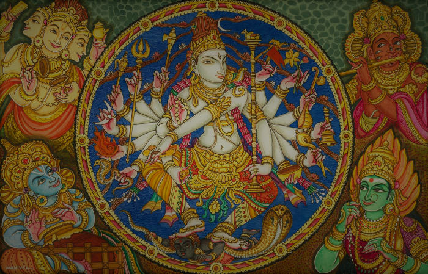

Simbolo
Ang aum ay nagsisilbing simbolo ng Hinduism at ang bawat letra ay may kahulugan. Ang mga letrang a, u, at m ay kumakatawan sa simula, pag-unlad, at hangganan, ayon sa pagkakabanggit. Sa kabuuan, ang salitang aum ay nagpapahiwatig na "Tanging ang Panginoon ang may kapangyarihan ng paglikha, pag-unlad, at pagkawasak ng mundo."Mga Diyos at Nagtatag
Naniniwala ang mga Hindu na ang buong natural na mundo ay nilikha ng isang diyos. Naniniwala rin ang mga Hindu na ang diyos ay nagpapakita ng sarili sa iba't ibang anyo. Ito ay si Brahman, Vishnu, at Shiva. Ang lumikha ay si Brahman, ang tagapangalaga ay si Vishnu, at ang tagapuksa ay si Shiva. Ang relihiyong Hinduismo ay itinatag ng mga Aryan.Mga Selebrasyon
Ang mga selebrasyon ng Hindu ay Holi at Divali. Ang Holi ay ipinagdiriwang tuwing tagsibol. Ang pagdiriwang na ito ay ginaganap bilang paggalang kay Shiva, ang kinikilalang diyos na tagapuksa. Ang Holi ay kanilang ginaganap sa pamamagitan ng maingay at makulay na pagparada. Ang Divali naman ang bagong taon ng mga Hindu. Ito ay ginaganap upang ipagdiriwang ang kasaysayan ng buhay ng kinikilala nilang si Rama at ng kanyang asawa.